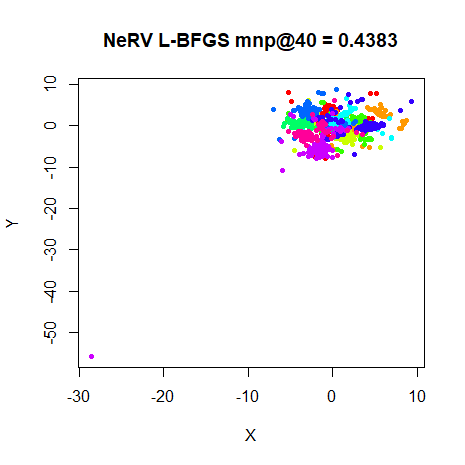
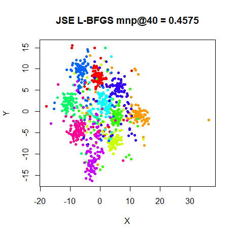

This article retains its original experiments and examples. For current package usage, see the usage guide.
NeRV and JSE are methods to related to SNE that both use a weighted sum of two different Kullback-Leibler divergences.
NeRV is the simplest, with the cost function being:
\begin{aligned} C_{\mathrm{NeRV}} &= \lambda D_{\mathrm{KL}}(P\mathbin{\|}Q) \\ &\quad + \left(1 - \lambda \right) D_{\mathrm{KL}}(Q\mathbin{\|}P) \\ &= \lambda \sum_{ij} p_{ij} \log \left( \frac{p_{ij}}{q_{ij}} \right) \\ &\quad + \left(1 - \lambda \right) \sum_{ij} q_{ij} \log \left( \frac{q_{ij}}{p_{ij}} \right) \end{aligned}
The JSE cost function is related to the Jensen-Shannon divergence:
\begin{aligned} C_{\mathrm{JSE}} &= D_{\mathrm{JS}}(P\mathbin{\|}Q) \\ &= \frac{1}{1 - \kappa}D_{\mathrm{KL}}(P\mathbin{\|}Z) + \frac{1}{\kappa} D_{\mathrm{KL}}(Q\mathbin{\|}Z) \end{aligned}
where Z is a mixture of P and Q: Z = \kappa P + \left(1- \kappa \right)Q
Both methods use the same normalization and output kernel as ASNE, and by setting the weighting parameter in the cost function appropriately, ASNE results can be generated. For NeRV this means setting \lambda = 1 and for JSE, it’s when \kappa = 0. This does unfortunately mean you have to remember that the two Greek symbols, while doing basically the same job in NeRV and JSE, have the opposite effect on each other when changing the weighting parameter from 0 to 1 in the cost functions.
The NeRV paper presents an information retrieval interpretation of the cost function, where \lambda controls the relative weight of false positive to false negative penalization. This makes sense when you consider that the normal Kullback-Leibler divergence penalizes small output probabilities that have large input probabilities, i.e. pairs of points that should have close distances but are too far apart. These can be considered false negatives in the information retrieval interpretation. Conversely, large output probabilities with small input probabilities suffer a much smaller penalty. This corresponds to points that ought to be placed far away but end up close together. These are false positives. So the standard KL divergence used in SNE can be considered to do its best to preserve local neighborhoods, at the cost of allowing points that aren’t neighbors to end up close together. By using a KL divergence where the role of P and Q is reversed, we get a cost function that places a larger importance on penalizing false positives, i.e. a layout where neighborhoods aren’t fully reproduced, but if two points are close together, we can be reasonably confident they really should be.
By blending the two divergences, we may get a cost function that can balance these opposing forces, and provide an extra “push” to some points that could work equivalently to replacing the Gaussian output kernel in ASNE and SSNE with the t-distributed kernel in t-SNE.
Gradients
The JSE and NeRV gradients can be written as:
\frac{\partial C}{\partial \mathbf{y}_i} = 2 \sum_{j} \left( k_{ij} + k_{ji} \right) \left(\mathbf{y}_i - \mathbf{y}_j\right)
where \mathbf{y}_i is the output coordinate of point i, and k_{ij} is the force constant between points i and j, with different methods producing different force constants. Because of the point-wise nature of the normalization used in both methods, the force constant matrix K is not symmetric, so k_{ij} \neq k_{ji}.
For NeRV, the force constant is:
k_{ij} = \lambda \left( {p_{ij}} - {q_{ij}} \right) + \left(1 - \lambda\right) q_{ij} \left[ \log \left( \frac{p_{ij}}{q_{ij}} \right) + D_{\mathrm{KL}}(Q\mathbin{\|}P) \right]
where D_{\mathrm{KL}}(Q\mathbin{\|}P) is the “reverse” Kullback-Leibler divergence.
For JSE, the force constant is:
k_{ij} = \frac{q_{ij}}{\kappa} \left[ \log \left( \frac{z_{ij}}{q_{ij}} \right) + D_{\mathrm{KL}}(Q\mathbin{\|}Z) \right]
Datasets
See the Datasets page.
Evaluation
Apart from visualizing the results, the mean neighbor preservation of
the 40 closest neighbors is used to provide a rough quantification of
the quality of the result, labelled as mnp@40 in the
plots.
Settings
Example commands for using NeRV and JSE are given below for the
iris dataset.
# default NeRV lambda = 0.9
iris_nerv <- smallvis(
iris,
scale = FALSE,
perplexity = 40,
Y_init = "spca",
method = "nerv",
ret_extra = c("dx", "dy"),
eta = 0.1,
max_iter = 2000,
tol = 1e-8
)
# non-default NeRV lambda = 0.1
iris_nerv0_1 <- smallvis(
iris,
scale = FALSE,
perplexity = 40,
Y_init = "spca",
method = list("nerv", lambda = 0.1),
ret_extra = c("dx", "dy"),
eta = 0.1,
max_iter = 2000,
tol = 1e-8
)
# default JSE kappa = 0.5
iris_jse <- smallvis(
iris,
scale = FALSE,
perplexity = 40,
Y_init = "spca",
method = "jse",
ret_extra = c("dx", "dy"),
eta = 0.1,
max_iter = 2000,
epoch = 100,
final_momentum = 0.25,
tol = 1e-8
)The default lambda is based on some applications of NeRV
by Yang,
Peltonen and Kaski. JSE’s default kappa was set to 0.5
in accord with the settings used for JSE in the multiscale JSE
paper.
On the fashion6k dataset, JSE with
kappa = 0.9 optimizes stably and seems to be converging
before suddenly blowing up. The onset of this seems to be a single point
being moved a large distance. It appears to be related to the
final_momentum parameter, rather than minimum step size
(controlled by min_gain).
Apart from this slight wrinkle, the DBD method does seem to do an ok job at optimizing. Futher improvements to the final error can be realized by starting a new optimization with the final DBD coordinates using L-BFGS, but there’s no large change to the output coordinates.
In the cases where divergence occurred, the optimization was carried
out by 500 steps of DBD (with final_momentum = 0.5)
followed by L-BFGS optimization allowing another 500 function or
gradient evaluations.
An example of this two-stage optimization (along with specifying a
non-default value of kappa) is given by:
fashion_jse0_9_short <- smallvis(
fashion6k,
scale = FALSE,
perplexity = 40,
Y_init = "spca",
method = list("jse", kappa = 0.9),
ret_extra = c("dx", "dy"),
eta = 0.1,
max_iter = 500,
tol = 1e-8,
final_momentum = 0.25
)
fashion_jse0_9_shortl <- smallvis(
fashion6k,
scale = FALSE,
perplexity = 40,
Y_init = fashion_jse0_9_short$Y,
method = list("jse", kappa = 0.9),
ret_extra = c("dx", "dy"),
max_iter = 500,
tol = 1e-8,
epoch = 10,
opt = list("l-bfgs", max_fg = 500)
)Results: NeRV
Results are show in the order where the top left image is the setting
closest to the pure “reverse” KL divergence and the bottom right image
is the ASNE result, which represents the pure “forward” KL divergence.
Going from left to right and then top to bottom, more of the forward KL
divergence is added to the cost function, which is indicated by the
value of lambda increasing.


Results: JSE
We’re using the same ordering of results as for NeRV: top left image
is the the setting closest to the pure “reverse” KL divergence and the
bottom right image is the ASNE result. Going from left to right and then
top to bottom, more of the forward KL divergence is added to the cost
function, which for JSE is indicated by the value of kappa
decreasing.
L-BFGS Optimization
The requirement for the fashion6k dataset to avoid
divergence by using L-BFGS after a certain number of DBD steps raises
the question of whether L-BFGS can just be used for the entire
optimization. I repeated some of the above runs where there was a
heavier emphasis on the “reverse” KL divergence (NeRV with
lambda = 0.1 and JSE with kappa = 0.9) using
L-BFGS and allowing up to 2,000 gradient evaluations
(max_gr = 2000).
Unfortunately, like the results for t-SNE with
L-BFGS, results are decidedly mixed: the minima found by L-BFGS are
higher than found by DBD, except for oli, where slightly
lower-error minima were found (for both NeRV and JSE). For everything
else, results are higher in error, lower in neighborhood retrieval, but
more importantly, don’t look as good. A particular blight is the
presence of outliers, which JSE suffers from with s1k,
mnist and fashion6k and NeRV produces with
s1k. The results for s1k are shown below.
 |
 |
Is this a problem specific to either the implementation of L-BFGS
optimization or the definition of JSE and NeRV used in
smallvis? Possibly. But if you look at the t-SNE embedding
or the ‘20NEWS’ dataset using L-BFGS in the Majorization
Minimization paper by Yang, Peltonen and Kaski, Figure 2, top
central panel, also shows a similar outlier problem.
Conclusions
In terms of neighborhood retrieval, NeRV or JSE can outperform t-SNE:
JSE is able to do so on every dataset, and NeRV only fails with
mnist6k and fashion6k. Admittedly, those two
are the larger, more difficult cases where we would like to see results.
But what is also apparent (and what is also noted in the JSE paper) is
that JSE provides results which are noticeably different from ASNE over
a larger range of its weighting parameter kappa than is
achieved with NeRV’s lambda parameter. When NeRV does
outperform t-SNE, it’s always with lambda = 0.1. So there
may be values much smaller than lambda = 0.1 (the smallest
value checked here) where NeRV can outperform t-SNE for the
mnist6k and fashion6k datasets. For JSE, the
optimal value of kappa was either 0.1 or
0.5, except for iris, where the optimal value
was 0.9.
However, I’m not sure I visually like the JSE or NeRV results better
than t-SNE. They are definitely better than ASNE, but looking at, for
example, the mnist6k results for JSE with
kappa = 0.1, while quantitatively, it is superior to the
t-SNE results, visually, it’s not as appealing in terms of separating
the clusters. Similar arguments can be applied to the oli
and s1k results. But on yet another hand, I think the
fashion6k results for JSE with kappa = 0.1
might be a little bit better than the t-SNE results. The JSE paper also
notes the less well-clustered nature of the results for the MNIST
digits, but claims that this more accurately represents the presence of
outlier (badly distored) digits. I’ll admit that I haven’t
double-checked this, but I have no reason to disbelieve the authors.
Finally, both NeRV and JSE have a more complicated gradient than
t-SNE that results in a slower optimization. Plus, as noted above, they
both seem harder to optimize than t-SNE. My current recommendation is to
use DBD where possible, but the default learning rate needs to be
modified and the more the “reverse” KL divergence is favored
(i.e. kappa approaching 1 lambda approaching
0) the more gentle an optimization is needed, so turn down the
momentum and final_momentum parameters. L-BFGS
doesn’t seem like a good alternative, except as a way to refine (if
necessary) a short DBD run i.e. 200-500 iterations of DBD, then
initialize the L-BFGS optimization with the DBD coordinates.
Addendum: Normalization Comparison
Update (January 23 2018): Results based on fiddling with different normalization options in SNE suggested that there might be some value in symmetrizing and then re-applying the row-normalization used in ASNE. As JSE and NeRV use the same normalization, it’s worth seeing if this has much effect.
What would be great would be if the optimization problems we see when
emphasising the reverse KL divergence in the cost function was
ameliorated with this normalization. Alas, this isn’t the case: that
fashion result still results in divergence. So below are
some results under more mild conditions, using kappa = 0.5
for JSE and lambda = 0.5 for NeRV. The left-hand images are
repeated from the results above. The right-hand images use the new
normalization technique (marked as “RSR” in the title of each plot):
fashion
I’d say that these results aren’t that different visually, and don’t offer a significant difference in terms of neighborhood retrieval either. It was worth a shot.
Addendum 2: JSE revisited
March 19 2019. I recently revisited the issues with
optimizing JSE. In some cases, the problem with one point becoming an
outlier seemed to be due to an elementary mistake I made in implementing
the weight calculation: \operatorname{e}^{-x} becomes zero for
not-all-that-large x.
abs(exp(-36) - .Machine$double.eps) is around
1e-17 and on my machine, as far as R is concerned,
exp(-746) == 0. Bearing in mind that the exponent is the
squared distance that means any pair of points more than 27 units of
distance apart will have a similarity of zero. Because JSE is
asymmetric, we only row normalize, and under those circumstances, there
is a much larger risk that many of the similarities round to zero and
you end up with the rows of the Q
matrix to being close to uniform. In turn, that leads to small force
constants in the gradient. And that leads to the displacement
of two points being able to dominate the gradient. And we already said
that it’s under these conditions that the distances are relatively
large. So it only takes a bit of an imbalance of how the points are
distributed and the differences can add up to a gradient that is
relatively large.
The solution is to use the log-sum-exp trick. There are several places that discuss this:
- https://statmodeling.stat.columbia.edu/2016/06/11/log-sum-of-exponentials/
- https://www.xarg.org/2016/06/the-log-sum-exp-trick-in-machine-learning/
- http://wittawat.com/posts/log-sum_exp_underflow.html
The upshot is that we can replace the raw exponential calculation with using shifted exponentials, where we substract the maximum value of -d_{ij}^2 from each distance before calculating the similarity. After normalization, the resulting probabilities are the same as in the unshifted case, but with a much lower risk of numeric underflow.
I don’t think I’ve seen this extended to the input similiarities calculated during the perplexity calibration, although you could. I’ve not seen any discussion of this being an issue anywhere, except in the intrinsic t-SNE where they note it can be an issue with un-normalized data, along with a quote from van der Maaten, suggesting that the distances all be divided by a suitably large number under these circumstances (most t-SNE implementations already do something like this).
Additionally, I also was much more careful with making sure that we
weren’t allowing zeros to creep into any matrix that needed to calculate
a logarithm. And I also reduced the epsilon used in these cases from
.Machine$double.eps to .Machine$double.xmin,
which also cured some potential convergence issues where replacing zeros
in the probability matrix (even using as small a value as
.Machine$double.eps) caused an accumulation of errors that
made it look like the cost function was increasing.
These changes made the JSE gradient calculation even slower than it
was before. But it did make it a bit easier to optimize. As discussed
above, I was unable to use standard DBD settings with
kappa = 0.9. Now, the optimizations all proceeded, even
with final_momentum = 0.8. This is definitely progress.
Unfortunately, I then noticed an outlier for s1k with
kappa = 0.5. In this case, it just seemed like the
arrangement of the points meant that the best bet for the outlier was to
put as much of the probability mass on its nearest two neighbors, which
it could achieve by increasing the distance between all other
points.
At this point I was tempted to conclude that I either was incapable of coding the JSE gradient correctly or this was a fundamental issue with JSE. It also reminded me that the original ASNE paper laments the difficulty of optimizing the ASNE cost function and later papers note that SSNE is much easier to work with. Perhaps this is the sort of thing they had trouble with, except the more complex JSE gradient, with its logs and divisions of numbers close to zero was exacerbating the issues. Also, the JSE paper uses a perplexity annealing approach to optimize JSE to avoid “poor local minima”, so it may be that something like this has been seen by others.
Rather than pursue perplexity annealing (or something similar like
starting at a low value of kappa and slowly increasing it
to the desired level), perhaps symmetrizing JSE would also help, like it
did with SNE. Changes to the gradient for JSE are straightforward and
entirely analogous to the difference between the ASNE gradient and the
SSNE gradient.
I repeated the tests for JSE and symmetric JSE (SJSE) using the settings below:
iris_sjse0.9 <- benchmark(
perplexity = 40,
Y_init = "spca",
method = list("sjse", kappa = 0.9),
eta = 10,
max_iter = 2000,
epoch = 50,
mom_switch_iter = 250,
tol_wait = 100
)
iris_jse0.9 <- benchmark(
perplexity = 40,
Y_init = "spca",
method = list("jse", kappa = 0.9),
eta = 1e-3,
max_iter = 2000,
epoch = 50,
mom_switch_iter = 250,
tol_wait = 100
)
iris_asne <- benchmark(
perplexity = 40,
Y_init = "spca",
method = "asne",
eta = 0.01,
max_iter = 2000,
epoch = 50,
mom_switch_iter = 250,
tol_wait = 100
)
iris_ssne <- benchmark(
perplexity = 40,
Y_init = "spca",
method = "ssne",
eta = 10,
max_iter = 2000,
epoch = 50,
mom_switch_iter = 250,
tol_wait = 100
)We now use standard settings for JSE and SJSE, except that for JSE, I
found that the low value of eta means that there’s a risk
of early convergence unless you tell smallvis to wait until
after the first 100 iterations (tol_wait = 100). To
compensate for the lower learning rate I increased the number of
iterations to 2000. This is probably unnecessary for practical uses of
JSE and SJSE.
The results below show the new JSE results on the left, with
kappa slowly decreasing. The equivalent SJSE results are on
the right. In the last row for each dataset are ASNE and SSNE results,
which are analogous to setting kappa = 0 for JSE and SJSE
respectively.
fashion6k
The degree of difference seems qualitatively larger between SJSE and
JSE than that between ASNE and SSNE. This seems to be more pronounced
for kappa = 0.9, but the JSE and SJSE results are still
quite similar. For example, there’s a “mottling” sort of pattern for the
clusters that form in both fashion6k and
mnist6k with kappa = 0.9. It’s definitely more
pronounced with the JSE results, but still apparent in SJSE. Also, SJSE
results seem to produce better-spaced clusters with fewer outliers.
They may not represent an absolutely 100% authentic JSE experience,
but I definitely prefer the SJSE results overall. They also optimize
more easily from the scaled PCA initialization with less risk of
outliers. I have also implemented a symmetric NeRV
(method = "snerv"), but haven’t done any proper
benchmarking on it yet.
Finally, it’s possible SJSE initialization could be a useful alternative to perplexity annealing for producing stable embeddings with JSE.